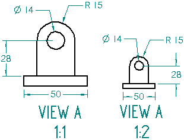
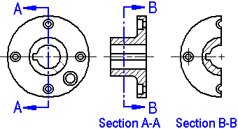

Working with drawing captions
Using drawing view captions
You can create and modify drawing view captions for all types of drawing views. For example, you can:
-
Use the caption text to identify whether the drawing view is a principal, auxiliary, or perspective view.
-
Automate the caption content so that it displays the view scale when it is different from the sheet scale.
-
Automate the caption content so that it displays the view rotation angle when it is any value other than 0 degrees.
You can place a caption above or below the drawing view, and you can specify the appearance of the caption text to include boldface or italics, and to specify the text size, color, and alignment.

Using view annotation captions
You also can create view annotation captions for cutting plane lines, view plane lines, and detail envelopes.
The view annotation captions are independent of the section, detail, auxiliary, or broken drawing views they define.
The view annotation captions on the cutting planes (A, B) are controlled independently of the section drawing view captions (SECTION A-A, SECTION B-B).

Using predefined annotation labels
Within a view annotation caption, you can specify that a predefined annotation label is shown automatically on the cutting plane line, the detail envelope, or the view plane line. The alphanumeric label value increments each time that type of view annotation is created. This ensures that each instance of the annotation has a unique name.
You can define unique, alphanumeric annotation labels using the Annotation tab in the Solid Edge Options dialog box. Then you can define a view annotation caption in the drawing view style to reference the label automatically each time a view annotation is created on a drawing.
In the previous example, the label (A) is displayed in the view annotation caption of the first cutting plane line; (B) is displayed in the caption of the second cutting plane line. If you create another cutting plane line on the same drawing, it is labeled automatically as (C).
For more information, see the following help topics:
Creating captions
You can add captions:
-
Manually, to an existing drawing view, by selecting the drawing view, and then typing the caption in the Caption box on the Drawing View Selection command bar. Use this method to add a simple primary caption to a drawing view. To learn how to do this, see Add a caption to a drawing view
-
Manually, to an existing view annotation, by selecting the cutting plane line, viewing plane line, or detail envelope, and then typing a caption in the Caption box on the View Annotation Selection command bar.
-
Automatically, by defining drawing view captions and view annotation captions as part of the Drawing View style. For more information, see Automating captions.
Using property text in captions
You can define captions that vary from simple to complex using a combination of plain text, property text, and symbols. To learn how to do this, see Define caption content using property text.
When you use property text in a caption, you can control which values are shown automatically in the caption, and which values are extracted but not shown. For more information, see Showing and hiding caption content.
Referencing text in drawing view captions
You can use reference text to associatively reference the information in the drawing view primary caption and secondary caption from annotations. You also can reference other drawing view properties, such as view scale, angle of rotation, and the label name of a cutting plane used to create a section view. For more information, see the help topic Using reference text.